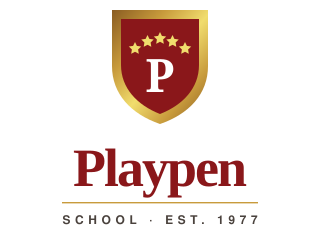

Brand Board · 2026
Positioning. For families in Dhaka choosing an English-medium education, Playpen is the Cambridge school that carries a child from Playgroup to A Level in one continuous, unhurried programme — on a campus built for the purpose, by teachers who stay.
Design direction
A crest school treated like a good magazine. Warm parchment ground, deep crimson anchors, gold used as a hairline rather than a fill, and an expressive serif doing the talking. Why: Playpen has 48 years of genuine history and a crest to prove it — the design should bank that rather than hide it, while the layout and pacing stay unmistakably current.
Primary colours, rounded sans, illustration. Rejected: it reads as a nursery, and Playpen teaches to A Level. It would undersell the senior school to exactly the parents the site needs to convert.
Navy, grey, stock photography, dense grid. Rejected: it is what every competitor already looks like, and it throws away the crimson-and-gold equity the crest has held since 1977.
Logo system
The existing shield is the school’s strongest asset and is not being replaced. What it lacked was a system: a mark that survives at 24px, a wordmark that works without the crest, and rules for both. That is what follows.
01 · Heritage crest — primary
Ceremonial use, certificates, uniforms, signage, print. Never below 32mm.
02 · Shield mark — digital
Derived from the crest: same shield, same five stars, same colours. Legible at 24px. Favicons, app icons, avatars.
03 · Wordmark
Fraunces 700 with a gold rule. For contexts where the crest would compete — document headers, email signatures.
04 · Single colour
One ink. Embossing, engraving, stamps, garment transfer, fax.
05 · Horizontal lockup — site header, letterhead, signage
06 · Inverted — dark surfaces and photography

07 · Stacked lockup — square formats, stationery, merchandise
Clear space & minimum size
Keep clear space on all four sides equal to the height of the shield mark’s crown — the distance from the top edge of the shield to the centre star. Nothing enters that zone: no text, no rules, no photographic detail.
Minimum sizes. Horizontal lockup 180px / 40mm wide. Stacked lockup 120px / 28mm. Shield mark 24px / 8mm. Heritage crest 100px / 32mm — below that, use the shield mark instead.
Colour system
Crimson and the gold family are sampled directly from the school crest, so the palette carries real equity rather than a designer’s preference. Contrast ratios below are measured against Parchment for light surfaces and Deep Maroon for dark.
#8A171A · 138 23 26
CMYK 21 96 89 12
The brand. Primary CTAs, active navigation, headings on light ground, the announcement bar.
8.9:1 on Parchment — AAA#5C0F12 · 92 15 18
CMYK 32 95 88 43
Large dark sections, the footer, hero overlays. Where the site needs weight and quiet.
14.3:1 with Parchment text — AAA#C89B3C · 200 155 60
CMYK 22 39 89 4
Accent on dark only: overlines, rules, stat figures, the gold button. Decorative on light.
5.3:1 on Deep Maroon — AA#8A5C22 · 138 92 34
CMYK 30 58 100 21
The gold family, made legible on light ground. All overlines, kickers and small accent text on Parchment.
5.4:1 on Parchment — AA#1A1614 · 26 22 20
All body copy and headings on light surfaces. Never pure black — it is too hard against parchment.
16.3:1 on Parchment — AAA#FBF7F0 · 251 247 240
The default page background. Warmer than white, which keeps the crimson from feeling clinical.
Base surface#EFE7DA · 239 231 218
Alternating sections, table headers, subtle cards. Separates content without drawing a box around it.
15.4:1 with Ink — AAATypography
Display · Variable · SIL Open Font License 1.1 · Google Fonts
A variable serif with real character — soft, slightly old-style, warm without being twee. It carries the school’s age without looking like a law firm. Optical sizing is on, so it holds its shape from 14px captions to 100px heroes.
ABCDEFGHIJKLMNOPQRSTUVWXYZ
abcdefghijklmnopqrstuvwxyz 0123456789
Body & UI · SIL Open Font License 1.1 · Google Fonts
A geometric sans that stays readable at small sizes and on the mid-range Android devices most Bangladeshi parents browse on. Neutral enough to let Fraunces lead, distinct enough not to read as a system default.
ABCDEFGHIJKLMNOPQRSTUVWXYZ
abcdefghijklmnopqrstuvwxyz 0123456789
Fluid, using clamp(). The range shown is mobile → desktop.
Voice
Playpen has enough real evidence — 48 years, a Cambridge pathway, a purpose-built campus, competition results — that it never needs a superlative. Say the specific thing; let the reader draw the conclusion.
| Homepage & admissions | Confident and welcoming. Lead with the child, close with a next step. |
| Academic pages | Precise. Subject lists, minimum requirements, dates. No adjectives. |
| Notices | Calm and operational. What, when, who it affects, what to do. |
| Policies & conduct | Neutral and exact. Preserve the official meaning; simplify only the grammar. |
| Achievements | Factual. Name, class, competition, placing, date. The facts are the boast. |
| Social media | Lighter, still specific. A real photograph beats a graphic every time. |
Use: students · parents · teachers · Cambridge curriculum · O Level · A Level · wellbeing · student support
Avoid: pupils / children / learners used interchangeably · best · No. 1 · world-class · unparalleled · CIE (use CAIE) · guaranteed admission
Applications
Playgroup to A Level · Bashundhara, Dhaka
Playpen has taught in Dhaka since 1977, following the Cambridge curriculum from the early years through to Ordinary and Advanced Level.
Explore admissionsThe academic journeyWebsite hero
Business card — 90 × 55mm, front and reverse
Social avatar
Examinations run from 30 November to 11 December 2025. PG to KG–II continue regular classes until 8 December.
Notice card
Signage & environment
For gate signage, hall boards and event backdrops: the heritage crest large, a 1pt gold rule, and the descriptor tracked to 0.2em. Nothing else on the surface.
Photography
Playpen’s existing photo library is its biggest untapped asset — and the single biggest area needing investment. The images that work are the unposed ones.
Treatment. Images on dark sections carry a Deep Maroon gradient at 60–95% opacity so type stays legible. Images on light sections are untinted. Corner radius 4px throughout. Aspect ratios: 4 : 3 for cards, 3 : 4 for portraits, 16 : 10 for full-width.